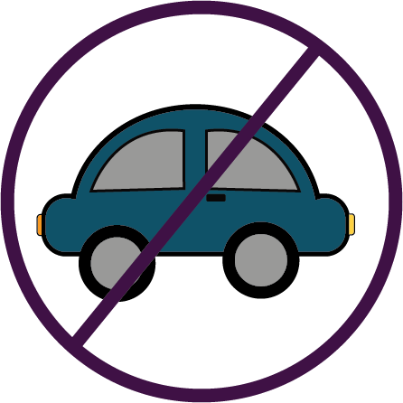

Drive Less
How does the use of vehicles impact the environment?
The transport sector burns most of the world's petroleum and is one of the largest sources of global greenhouse gas emissions. It's also heavy on air pollution. cars are a major contributor to air pollution producing significant amounts of nitrogen oxides, carbon monoxide, and particulate matter.
80-90% of cars’ environmental impact comes from fuel consumption and emissions of air pollution and greenhouse gases.
Particulate matter in the air alone is responsible for up to 30,000 premature deaths every year.
What can we do to help reduce this impact?
Whenever possible, use public transportation such as buses, trains, or subways. This reduces the number of cars on the road and reduces emissions.
Sharing a ride with others can significantly reduce the number of cars on the road and emissions. Consider carpooling with colleagues or friends, or using ride-sharing services like Uber or Lyft.
Electric or hybrid cars produce fewer emissions than traditional gasoline-powered vehicles. Consider purchasing an electric or hybrid vehicle, or renting one for long trips.
Whenever possible, walk or bike instead of driving. This not only reduces emissions but also provides health benefits.
Regular maintenance of your car, such as changing the oil, replacing air filters, and keeping tires properly inflated, can improve fuel efficiency and reduce emissions.
Choose vehicles with higher fuel efficiency ratings. Smaller cars, motorcycles, and scooters consume less fuel and produce fewer emissions.
